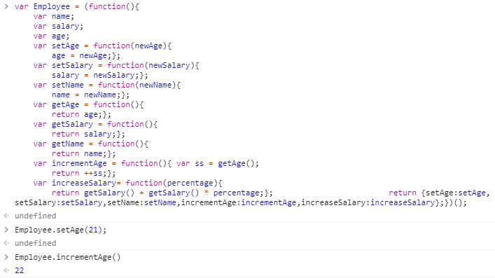
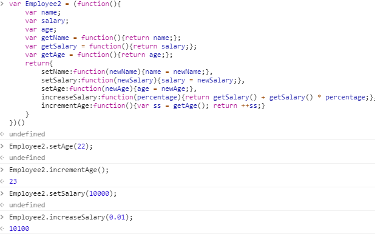
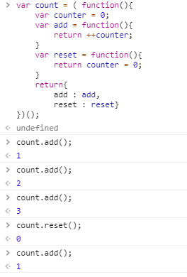
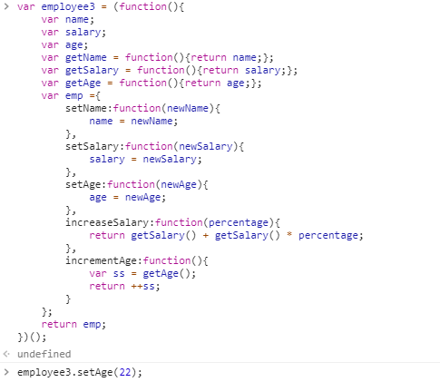
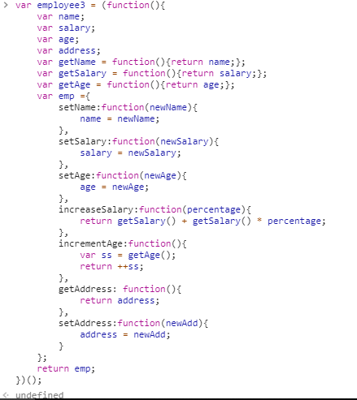

1. Determine what this Javascript code will print out (without running it):
x = 1;
var a = 5;
var b = 10;
var c = function(a, b, c) {
document.write(x);
document.write(a);
var f = function(a, b, c) {
b = a;
document.write(b);
b = c;
var x = 5;
}
f(a,b,c);
document.write(b);
var x = 10;
}
c(8,9,10);
document.write(b);
document.write(x);
undefined,8,8,9,10,1
2. Define Global Scope and Local Scope in Javascript.
With JavaScript, the global scope is the complete JavaScript environment.
A local scope refers to any scope defined past the global scope. There is typically one global scope, and each
function defined has its own (nested) local scope. Any function defined within another function has a local
scope which is linked to the outer function.
3. Consider the following structure of Javascript code:
// Scope A
function XFunc () {
// Scope B
function YFunc () {
// Scope C
};
};
(a) Do statements in Scope A have access to variables defined in Scope B and C?
(b) Do statements in Scope B have access to variables defined in Scope A?
(c) Do statements in Scope B have access to variables defined in Scope C?
(d) Do statements in Scope C have access to variables defined in Scope A?
(e) Do statements in Scope C have access to variables defined in Scope B?
NO,YES,NO,YES,YES
5. var foo = 1;
function bar() {
if (!foo) {
var foo = 10;
}
alert(foo);
}
bar();
What will the alert print out? (Answer without running the code. Remember ‘hoisting’.)?
10
7. In the definition of add( ) shown in question 6, identify the "free" variable. In the context of a
function closure,
what is a "free" variable?
Counter.
A variable referred to by a function that is
not one of its parameters or local variables.
8. The add( ) function defined in question 6 always adds 1 to the counter each time it is called. Write a
definition
of a function make_adder(inc), whose return value is an add function with increment value inc (instead of 1).
Here
is an example of using this function:
add5 = make_adder(5);
add5( ); add5( ); add5( ); // final counter value is 15
add7 = make_adder(7);
add7( ); add7( ); add7( ); // final counter value is 21

4. What will be printed by the following (answer without running it)?
var x = 9;
function myFunction() {
return x * x;
}
document.write(myFunction());
x = 5;
document.write(myFunction());
81,25
9. Suppose you are given a file of Javascript code containing a list of many function and variable
declarations. All of
these function and variable names will be added to the Global Javascript namespace. What simple modification to
the Javascript file can remove all the names from the Global namespace?
Use module pattern to change global into local.
10. Using the Revealing Module Pattern, write a Javascript definition of a Module that creates an
Employee Object
with the following fields and methods:
Private Field: name
Private Field: age
Private Field: salary
Public Method: setAge(newAge)
Public Method: setSalary(newSalary)
Public Method: setName(newName)
Private Method: getAge( )
Private Method: getSalary( )
Private Method: getName( )
Public Method: increaseSalary(percentage) // uses private getSalary( )
Public Method: incrementAge( ) // uses private getAge( )

11. Rewrite your answer to Question 10 using the Anonymous Object Literal Return Pattern.

6. Consider the following definition of an add( ) function to increment a counter variable:
var add = (function () {
var counter = 0;
return function () {
return counter += 1;
}
})();
Modify the above module to define a count object with two methods: add( ) and reset( ). The count.add( ) method
adds one to the counter (as above). The count.reset( ) method sets the counter to 0.

12. Rewrite your answer to Question 10 using the Stacked Locally Scoped Object Literal
Pattern.

13. Write a few Javascript instructions to extend the Module of Question 10 to have a public address
field and
public methods setAddress(newAddress) and getAddress( )

14. What is the output of the following code?
const promise = new Promise((resolve, reject) => {
reject(“Hattori”);
});
promise.then(val => alert(“Success: “ + val))
.catch(e => alert(“Error: “ + e));
Error: Hattori
15. What is the output of the following code?
const promise = new Promise((resolve, reject) => {
reject(“Hattori”);
setTimeout(()=> reject(“Yoshi”), 500);
});
promise.then(val => alert(“Success: “ + val))
.catch(e => alert(“Error: “ + e));
Error: Hattori